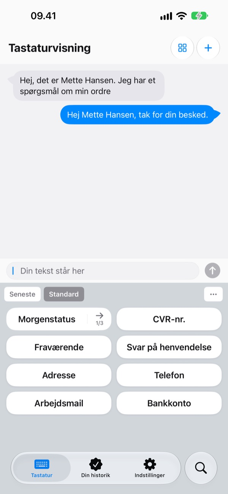
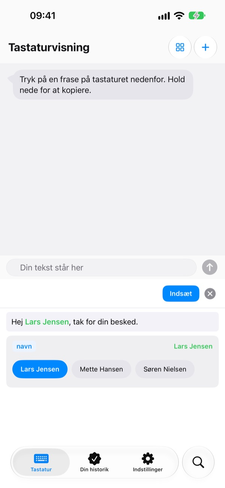
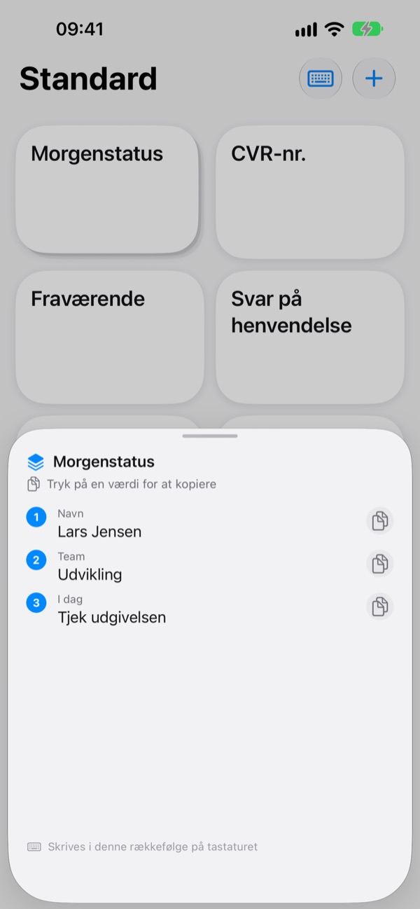
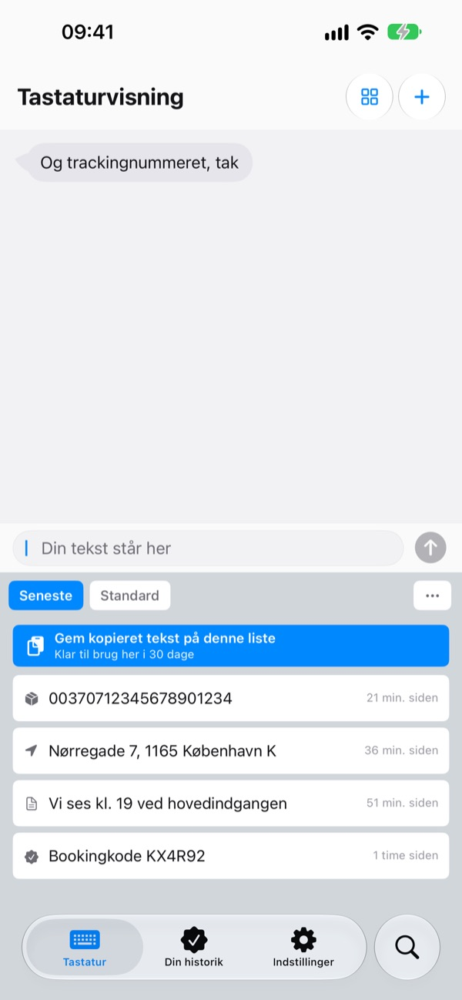
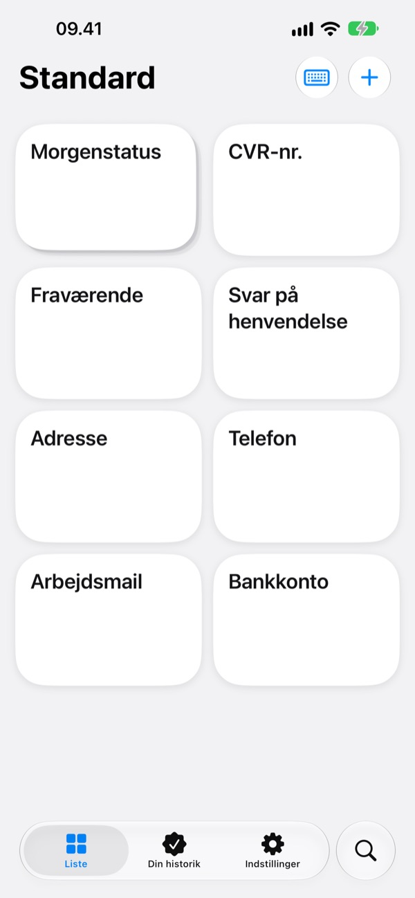

Hold op med at skrive
det samme igen
Gem dit kontonummer, din adresse eller din faste mailindledning én gang. I Beskeder, Mail, Safari og alle andre steder, hvor du skriver, er de ét tryk væk på tastaturet.
Alle funktioner er gratis de første 100 indsættelser.

Prøv det lige her
Det her er appens egen skærm Forhåndsvisning af tastatur. På din iPhone dukker tastaturet op overalt, hvor du kan skrive.
Hvor mange gange har du skrevet dit kontonummer i dag?
En ven spørger, hvor pengene for deres andel skal sendes hen, så du åbner bankappen og kopierer nummeret. Bagefter taster du din leveringsadresse bogstav for bogstav, igen, og skriver den samme hilsen i hver eneste kundemail. ClipKeyboard holder de linjer klar på tastaturet, ét tryk væk.
Udfyld kun det, der skifter
Skabeloner lader de dele, der skifter, som {navn} eller {dato}, stå som tomme felter.
Når du indsætter en, spørger den kun om felterne, og du kan vælge en værdi, du har brugt før.

Flere værdier i rækkefølge
En stak samler flere værdier, fx navn, team og dagens opgave, på én tast.
Tryk for at indsætte den aktuelle plads, og gå videre til den næste med pilen ved siden af.

Det, du kopierer, er også på tastaturet
Trackingnummeret, adressen eller telefonnummeret, du lige har kopieret, lander under fanen Seneste på tastaturet.
Mailadresser, telefonnumre, adresser, kortnumre og IBAN bliver genkendt og sorteret, så du finder dem igen på et sekund.

Lås det følsomme inde
Gør pas- og kortnumre til sikre fraser, der er låst med Face ID.
Har du et kontonummer på papir? Tag et billede, og stryg fingeren hen over lige de tegn, du skal bruge.

Kom i gang på tre trin
- 1
Tilføj tastaturet
Indstillinger > Generelt > Tastatur > Tastaturer > Tilføj nyt tastatur, og vælg ClipKeyboard.
- 2
Tillad fuld adgang
Tastaturet skal bruge det for at kunne læse de fraser, du har gemt i appen. Det, du skriver, forlader aldrig din enhed.
- 3
Hold på kloden for at skifte
Hold 🌐 nede på tastaturet i en vilkårlig app, vælg ClipKeyboard, og tryk på en tast.
Det kan du have på tastaturet
- Frase
- Indsætter præcis det, du har gemt, også linjeskift og emoji.
- Skabelon
- Felter i tuborgklammer, som {navn}, udfyldes, hver gang du indsætter den.
- Stak
- Flere værdier på én tast. Pilen går videre til næste plads.
- Sikker frase
- Indsættes først efter Face ID eller Touch ID. (Pro)
- Billedfrase
- Tryk for at kopiere billedet, og sæt det ind i din besked.
- Udklipsholderhistorik
- Gemmer det, du kopierer, sorteret efter type og klar til brug igen.
- Scan tekst ind
- Stryg over tekst på et foto for kun at tage den del. Fotoet gemmes ikke.
Hele brugervejledningen finder du på m1zz.github.io/ClipKeyboard/da/tutorial.html.
Brug den 100 gange, og bestem dig så
Gratis
- Alle funktioner, indtil du har indsat fraser 100 gange
- Alt, hvad du har lavet, virker stadig bagefter
- Nye elementer: op til 10 fraser, 3 skabeloner, 3 stakke og 5 billeder
- 50 elementer i udklipsholderhistorikken
Plus · Pro
- Plus: ubegrænset med fraser, skabeloner, stakke og billeder, 100 elementer i udklipsholderhistorikken
- Pro: alt i Plus samt iCloud-backup, Face ID-lås og synkronisering mellem enheder (beta)
Begge fås som årligt abonnement eller som et engangskøb, der gælder for altid.
Dine fraser bliver aldrig slettet, heller ikke hvis du ikke betaler, eller et abonnement udløber. Ingen reklamer.
Spørgsmål
Mine fraser vises ikke på tastaturet.
Fuld adgang er sikkert slået fra. Gå til Indstillinger > Generelt > Tastatur > Tastaturer > ClipKeyboard, og slå Tillad fuld adgang til.
Kan jeg beholde mit vante tastatur?
Ja. Når en frase er sat ind, skifter ClipKeyboard tilbage til det tastatur, du brugte, og det kan slås fra i indstillingerne. Du kan også skrive med selve ClipKeyboard: det har taster som på iPhone på 23 sprog.
Kan jeg skrive japansk eller kinesisk?
Japansk op til kana og kinesisk op til pinyin og zhuyin. Omdannelse til kanji og hanzi findes ikke endnu.
Det, jeg kopierer, dukker ikke op i historikken.
iOS forhindrer andre apps i selv at læse udklipsholderen. Åbn appen én gang, og brug så tastaturet, så dukker det op.
Hvordan sletter jeg værdier, der er gemt til en skabelon?
Tryk på et felt i skabeloneditoren for at se de gemte værdier. Stryg på en værdi for at slette den.
Hvad sker der efter 100 indsættelser?
Alle de fraser, skabeloner og stakke, du har lavet, virker stadig. De gratis grænser gælder kun nye elementer. Vælg Plus eller Pro, hvis du vil have dem fjernet.
Bliver mine fraser sendt nogen steder hen?
Nej. De gemmes på denne enhed, og vi indsamler ikke indholdet. Med iCloud-backup slået til gemmes de krypteret i din egen iCloud. Vi indsamler kun anonyme brugsstatistikker for at forbedre appen og bruger ingen analyseværktøjer fra tredjeparter.
Hvad sker der, når jeg får en ny telefon?
Med iCloud-backup fra Pro slået til gendanner du på den nye enhed med samme Apple-konto. Billedfraser kommer også med. En gendannelse erstatter de fraser, der allerede ligger på enheden.
Virker det på iPad?
Ja, både på iPhone og iPad.
Mit problem står ikke her.
Skriv til os på mail herunder, og fortæl, hvad der skete. Vi svarer som regel inden for et døgn.
Spørgsmål eller feedback? Skriv til leeo@kakao.com.